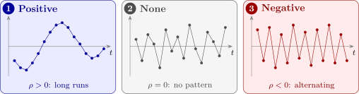

13.1 Sources and effects of autocorrelation
Autocorrelation in the errors of a time-series regression usually has one of two sources:
- a regressor that changes smoothly over time has been left out of the model, so its effect, which moves slowly, sits in the errors;
- the process itself has inertia: the effects of a disturbance die away over several periods rather than at once.
The first source calls for a better model, and adding the missing regressor may remove the autocorrelation entirely. The second calls for a model of the errors themselves.
The first-order autoregressive model
The simplest and most used model for autocorrelated errors is the first-order autoregressive process, AR(1): \[ y_t = \beta _0 + \beta _1x_t + \varepsilon _t , \qquad \varepsilon _t = \rho \,\varepsilon _{t-1} + a_t , \qquad t = 1, \dots , n , \] where \(|\rho | < 1\) and the \(a_t\) are independent \(N(0, \sigma _a^2)\), with \(a_t\) independent of \(\varepsilon _{t-1}, \varepsilon _{t-2}, \dots \). Each error is a fraction \(\rho \) of the last one plus a fresh disturbance. The parameter \(\rho \) is the autocorrelation parameter.
Theorem 13.1.1. If the AR(1) process is stationary (its variance does not change with \(t\)), then \begin {gather*} \operatorname {Var}(\varepsilon _t) = \sigma ^2 = \frac {\sigma _a^2}{1 - \rho ^2} , \\ \operatorname {Cov}(\varepsilon _t, \varepsilon _{t-k}) = \rho ^k\sigma ^2 , \qquad \operatorname {Corr}(\varepsilon _t, \varepsilon _{t-k}) = \rho ^k . \end {gather*}
Proof. Since \(a_t\) is independent of \(\varepsilon _{t-1}\), \(\operatorname {Var}(\varepsilon _t) = \rho ^2\operatorname {Var}(\varepsilon _{t-1}) + \sigma _a^2\). With both variances equal to \(\sigma ^2\), \(\sigma ^2(1 - \rho ^2) = \sigma _a^2\). For \(k \ge 1\), \(a_t\) is independent of \(\varepsilon _{t-k}\), so \(\operatorname {Cov}(\varepsilon _t, \varepsilon _{t-k}) = \rho \operatorname {Cov}(\varepsilon _{t-1}, \varepsilon _{t-k})\). Repeating this \(k\) times reaches \(\rho ^k\operatorname {Var}(\varepsilon _{t-k}) = \rho ^k\sigma ^2\). □
So the correlation decays geometrically as the observations get further apart. The errors have covariance matrix \(\sigma ^2\boldsymbol \Sigma \), where \(\boldsymbol \Sigma \) has \((s, t)\) element \(\rho ^{|s-t|}\). When \(\rho > 0\), the usual case, neighbouring errors have the same sign, and the residuals drift in long runs above and below zero. When \(\rho < 0\) they alternate in sign. Figure 28 shows the three patterns.

What autocorrelation does to least squares
Theorem 13.1.2. Suppose \(E(\boldsymbol \varepsilon ) = \mathbf {0}\) and \(\operatorname {Var}(\boldsymbol \varepsilon ) = \sigma ^2\boldsymbol \Sigma \). Then the least-squares estimator \(\hat {\boldsymbol \beta } = (\mathbf {X}^\top \mathbf {X})^{-1}\mathbf {X}^\top \mathbf {y}\) is still unbiased, but \[ \operatorname {Var}(\hat {\boldsymbol \beta }) = \sigma ^2(\mathbf {X}^\top \mathbf {X})^{-1}\mathbf {X}^\top \boldsymbol \Sigma \mathbf {X}(\mathbf {X}^\top \mathbf {X})^{-1} . \] For the simple regression with AR(1) errors, with \(u_t = x_t - \bar x\), \[ \operatorname {Var}(\hat \beta _1) = \frac {\sigma ^2}{S_{xx}}\Bigl [1 + 2\sum _{k=1}^{n-1}\rho ^kc_k\Bigr ] , \qquad c_k = \frac {\sum _{t=k+1}^n u_tu_{t-k}}{S_{xx}} . \]
Proof. Since \(\mathbf {y} = \mathbf {X}\boldsymbol \beta + \boldsymbol \varepsilon \), \[ \hat {\boldsymbol \beta } = \boldsymbol \beta + (\mathbf {X}^\top \mathbf {X})^{-1}\mathbf {X}^\top \boldsymbol \varepsilon , \] which has mean \(\boldsymbol \beta \), and by Lemma 3.1.3 its variance is \((\mathbf {X}^\top \mathbf {X})^{-1}\mathbf {X}^\top (\sigma ^2\boldsymbol \Sigma )\mathbf {X}(\mathbf {X}^\top \mathbf {X})^{-1}\). In simple regression, \(\hat \beta _1 = \beta _1 + \sum _tu_t\varepsilon _t/S_{xx}\), so \begin {align*} \operatorname {Var}(\hat \beta _1) &= \frac {1}{S_{xx}^2}\sum _s\sum _tu_su_t\operatorname {Cov}(\varepsilon _s, \varepsilon _t) \\ &= \frac {\sigma ^2}{S_{xx}^2}\sum _s\sum _tu_su_t\rho ^{|s-t|} \end {align*}
by Theorem 13.1.1. The terms with \(s = t\) add up to \(S_{xx}\), and the pairs of terms at distance \(k\) add up to \(2\rho ^k\sum _tu_tu_{t-k}\). □
The usual formula \(\sigma ^2/S_{xx}\) keeps only the first term. The \(c_k\) are the autocorrelations of the regressor. In time series the regressor itself usually trends or moves smoothly, so \(c_1, c_2, \dots \) are positive, and with \(\rho > 0\) the bracket exceeds \(1\): the true variance of \(\hat \beta _1\) is larger than the formula says. Worse, the usual estimate \(s^2\) of \(\sigma ^2\) also tends to be too small, because positively correlated residuals stay closer to the fitted line than independent ones would. The consequences are:
- the estimates are unbiased, but no longer have minimum variance;
- the reported standard errors are too small, often much too small;
- confidence intervals are too narrow and \(t\)- and \(F\)-tests reject too often, so regressors appear significant when they are not.
Questions on this section
Stuck on something here? Ask below and it stays attached to this topic.